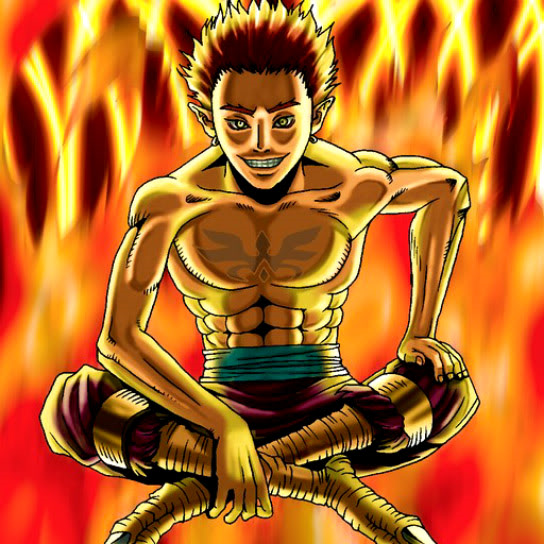

Fireyarou

STATS
ATK: 1300
DEF: 1000DECK COST
Deck Cost per Card: 23Fusion List (11 Possible Fusions)
- Fireyarou + Armaill = Flame Swordsman
- Fireyarou + Blue-Winged Crown = Crimson Sunbird
- Fireyarou + Catapult Turtle = Giant Turtle Who Feeds on Flames
- Fireyarou + Droll Bird = Crimson Sunbird
- Fireyarou + Fiend Reflection #1 = Crimson Sunbird
- Fireyarou + Fiend Sword = Flame Swordsman
- Fireyarou + Flame Swordsman = Vermillion Sparrow
- Fireyarou + Milus Radiant = Flame Cerebrus
- Fireyarou + Spirit of the Books = Crimson Sunbird
- Fireyarou + Swordsman from a Foreign Land = Flame Swordsman
- Fireyarou + Wing Eagle = Crimson Sunbird